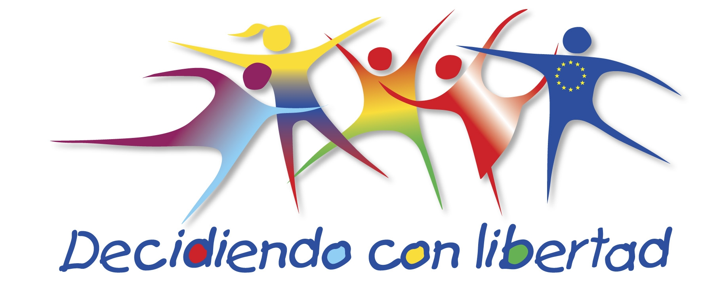

LABOR
- Cada país ha realizado un programa de sensibilización y capacitación a las autoridades y funcionarios que tienen que ver directamente con la temática. Esto se ha logrado a través de seminarios y talleres donde se ha expuesto la problemática específica de cada región y país para posteriormente, sobre la base de estas realidades, elaborar una planificación de acciones conjuntas, mediante la firma de convenios de cooperación interinstitucional, entre el proyecto y estas reparticiones estatales.
- Cada uno de los países ha elaborado e implementado una estrategia comunicacional basada en los objetivos del proyecto y los resultados esperados del mismo, sobre la base de mensajes comunes definidos en las reuniones del Comité Regional.Esta estrategia,se ha constituido en una herramienta para llegar a la población adulta en general; la misma se ha diseñado apartir de los resultados de la línea de base que se realizó en los tres países.
- En los tres países, se ha realizado un mapeo de las organizaciones de la sociedad civil y ONG’s que trabajan en la temática y se viene desarrollando acciones conjuntas.El mapeo ha evidenciado las condiciones institucionales de las organizaciones y adolescentes y jóvenes, mujeres y hombres, como de las ONG’s. Sobre la base de este mapeo, se ha confeccionado una base de datos en cada país que permite conocer las características de cada una de las organizaciones en los tres países, con las que se implementará el proyecto.
- Se crea una Red social para comunicación e intercambio de información entre ONG's y sociedad Civil para incidir en la agenda pública.
- En el primer periodo de la Acción, se consolidó el asocio trinacional del proyecto, tanto en el aspecto técnico como político. Los socios se han compenetrado con la estrategia y los objetivos del proyecto y se consolidaron las alianzas regionales con los gobiernos subnacionales para el desarrollo de las estrategias regionales de incidencia política.
- Se ha logrado el involucramiento de los gobiernos regionales, lo cual se ha traducido en su respaldo institucional y en algunos casos, de recursos.
- Se ha constatado la visibilización que la UE ha adquirido en la sociedad en materia de los derechos sexuales y reproductivos, como entidad articuladora, propositiva y coadyuvante.
- Taller de Arranque del Proyecto con los socios, llevado adelante en la ciudad de La Paz, en fecha 10 al 12 de enero, en el cual se organizó y coordinó las actividades a ser desarrolladas durante el primer año de la Acción.
- En fecha 4 de febrero, se llevó a cabo una reunión de presentación de LD con el señor Luca Citarella, Oficial de Programas de Salud de la Unión Europea. En la reunión se trató varios puntos referidos a las conclusiones del Taller de Arranque y se solicitó aclaraciones sobre la normativa UE, concerniente a modificaciones presupuestarias, tipo de cambio y aclaraciones sobre los detalles de la ejecución de la Acción.
- En fecha 21 de febrero el Director Regional de LD, fue en misión a Perú para reunirse con el socio INPPARES.
- En fecha 1º de Marzo, se realizó una reunión de coordinación con Plan Internacional, quien en asocio con CIES, ganó un Contrato de Subvención de la UE sobre la misma temática. Esta reunión se celebró con los representantes de Plan Internacional, CIES y Louvain Développement.
